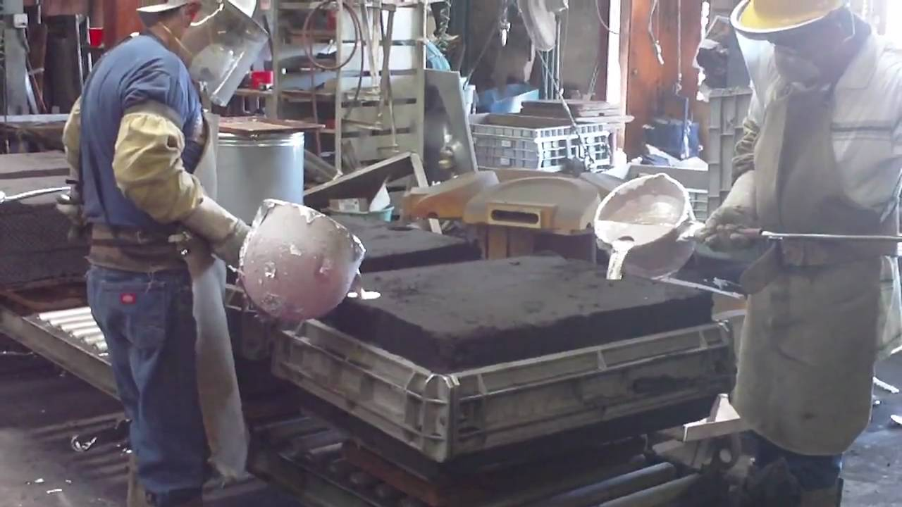

Technocrat Consulated Pvt. Ltd. came into existence in 2005. For more than a decade we are engaged in manufacturing and supplying vast assortment of transmission products. Our area of expertise is aluminium casting. With the help of latest technology, we cast a vast range of mechanical structures of every possible shapes and sizes. Every operation that we undertake goes through a complex process optimising them to suit the melting of alloy like steel. The electric arc furnace we use can efficiently go up to over 1,600 °C (2,910 °F) so that the aluminium be molten and poured into the hollow cavity of mould for the desired shape.
Split patterns are adopted, in which the cope and the drag are inserted to complete the final shape. In accomplishing the ultimate shape of the mould, we ensure the resilience of the parting line. This requires processes, the number of which is exclusively worked out in accordance with the size and complexity of the casting and the quantity of parts to be produced.
Degating is a crucial step In order to produce perfect casting. The runners, gates and risers are removed by bandsaws and by ceramic cut-off blades. We are also adaptive to knock-off machineries with special designs which could be incorporated into the riser neck geometry allowing the riser to break off precisely at the right place.
Heat treatments like annealing, case hardening, precipitation strengthening, tempering, and quenching in which the heating and cooling are done for the specific purpose of altering properties intentionally.
In order to remove mould remnants, the surface is cleaned using a blasting process with compressed air to remove sand slag, if any. It is also important to select the blasting media to deliver the colour and reflectance of the cast surface in accordance to specifications. This also involve cleaning, bead blasting, and sand blasting. Shot peening too is used to further work-harden and finish the surface.
Gate stub is used by grinder or sander before final machining to make certain tight dimensional control. Usages of machine also limit the possibility of any human error. They also reduce the repeatability in the quality of grinding.
The strict confirmation to the state of the art procedures that we adhere, is widely appreciated by our clients. They certify the high tensile strength, accurate design,, sturdy construction and dimensional accuracy of products that manifest from our workshop after our rigorous quality control management.
Some products that adeptly come out of our workshop include High Voltage Isolators, Insulators, Insulator Hardware Fittings, Tension clamps, Substation Clamps, and Connectors.
Our feet are rooted and evolved. So, we are ready to embrace every challenges that the ever-changing of the world-market.